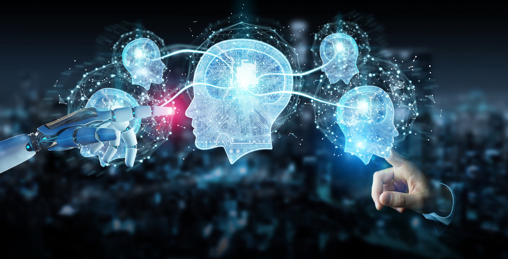

In the ever evolving landscape of technology, AI is reshaping the way we work. From automation to advanced data analysis, AI has profound implications for the future employment.
One of the most discussed aspects of AI is its role in automation. As machines become more sophisticated, routine tasks are increasingly performed by AI systems, leading to concerns about job displacement. According to a study automation has shown significant progression and that is now consistently present in various fields.
Upskilling and ReskillingWhile automation may lead to job displacement in certain sectors, there is a growing emphasis on upskilling and reskilling the workforce. Organizations are investing in programs to train employees in new skills, preparing them for the jobs of the future that require a combination of technical and soft skills.
AI Collaboration in the WorkplaceRather than replacing human workers, AI is often viewed as collaborative tool. For example, in customer service, AI chatbots can handle routine queries, allowing human employees to focus on more complex issues that require empathy and problem-solving skills.
As AI becomes more integrated into the workplace, ethical considerations arise. Issues such as bias in AI algorithms and the ethical use of AI in decision-making processes need careful examination. Companies are urged to adopt ethical AI practices to ensure fair and responsible implementation.
The Evolution of Job RolesThe introduction of AI is leading to the evolution of job roles. New positions are emerging, such as AI trainers, ethicists, and AI system maintenance specialists. The workforce of the future will require individuals with a diverse set of skills to navigate the AI-driven landscape.
The impact of AI on the future work is multifaceted. While automation raises concerns about job displacement, proactive measures like upskilling and ethical considerations can help harness the potential of AI for the betterment of society. As we embrace this technological revolution, it is crucial to strike a balance between efficiency and human-centric values in the workplace.